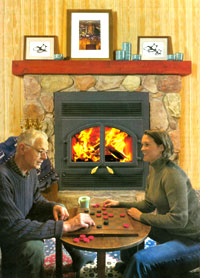
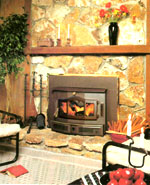
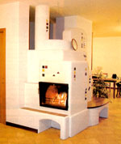
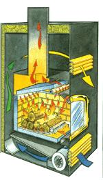

The classic fireplace, with a blazing fire open to the room, is a traditional symbol of comfort and security. Many people include a fireplace among their "must have" features when planning for their dream home. On a more practical level, an open fireplace is notoriously inefficient as a means of heating a room. Its appetite for air, to keep smoke from the fire going up the chimney instead of out into the room, is what causes the inefficiency.
But lots of people, including many who already heat their homes with a woodstove, probably would consider a fireplace instead-if they could find one that would do the job efficiently. The enduring popularity of fireplaces combined with the choice many of us make to use renewable wood heat for our homes has prompted a number of changes in traditional fireplace design that attempt to address the inefficiency problem.
To be an effective heater, a fireplace must borrow some of the features perfected by woodstove designers over the last 20 years. These include gasketed, ceramic glass doors with an airwash system to keep them clean; firebox insulation and internal baffling. An adjustable combustion air supply also is needed to control the burn rate and, therefore, the output of heat.
Some fireplaces with all these features are on the market. The quick way to find them is to look for either factory-built fireplaces or fireplace inserts that are certified by the Environmental Protection Agency (EPA) as meeting the EPA smoke emission standards, which stipulate acceptable concentrations of air polluting emissions from freestanding woodstoves and fireplace inserts.
In designing these fireplaces to burn efficiently enough to meet the standards, the manufacturers have produced some beautiful units that also are able to provide significant heat to your home.
Here's what you need to know to sift through the product specifications, sales advice and marketing hype to choose a unit that will match your personal heating and decor goals.
Open fireplaces commonly found in North American homes today fit into one of four general structural categories:
Conventional masonry. The standard traditional fireplace, this style is built of brick, block or stone by bricklayers following building code rules, without reference to any specific design criteria. It has a deep, squarish firebox that tends to trap radiant heat in the masonry and allow excess air to flush the heat up the chimney. The efficiency of all other fireplaces is compared to this most-common and least-efficient design.
Steel heat form. Popularly called heatilators (after a major manufacturer of this kind of fireplace), steel heat forms consist of a firebox and often a heat exchanger around which masonry fireplaces can be built.
Some steel heat forms have air circulation chambers, usually with inlets under the firebox at floor level and outlets between the mantel and the ceiling. When equipped with tight-fitting glass doors and a blower to force air from the room through the heat exchanger, these fireplaces can match the heating performance of an antique potbellied stove for short periods of time. But most heat forms are not designed for, and can't stand up to, serious heating chores without failing. Commonly, the fireboxes will warp or crack from the fire's heat.
Radiant fireplaces. The fireboxes of open fireplaces can be designed to increase the amount of radiant heat delivered to the room. Fireplace designs by Benjamin Thompson (aka Count Rumford) and later, Peter O. Rosin dominate this category. The Rumford design features a tall, shallow firebox with a narrow back and splayed sides to bring the fire forward and reflect more heat into the room. Rosin's firebox, precast with a bulge in the back, reflects the heat down, towards the fire, and then out into the room. The success of both the Rosin and Rumford designs in directing more radiant heat into the room is apparent to anyone standing in front of one of these fireplaces. But neither design overcomes the problem of heat loss from the flow of air up the chimney. Nevertheless, they're great options for a rustic weekend cabin.
"Zero-clearance" factory-built fireplaces. This style has a multi-layer sheet metal structure and usually, a firebox lined with custom firebricks. Around the firebox is a sealed space through which room air can circulate; an outer steel casing is insulated to moderate its temperature.
The name "zero clearance" refers to this style's standard positioning against the combustible wood framing into which these units are built. Tens of thousands have been installed in suburban houses during the past 30 years. They mimic the look of conventional brick fireplaces but cost much less. The heating performance of conventional `zeros' is generally poor.
All four styles of conventional fireplaces suffer from three inherent problems. Any one of the problems reduces their appeal, but the combined effect make them unsuitable for use in new houses for heating or aesthetics.
1. High air demand reduces efficiency. This is true even in fireplaces with special features that increase radiant heat to the room or that have air circulation chambers in which room air can be heat ed. True, a Rumford or Rosin puts out a lot of radiant heat, and true, the air pouring from the outlet grills of a heat form or a factory-built fireplace is very hot. But a sizable fraction of that heat loops through the room once and then flows right back into the firebox and up the chimney. The uncontrolled flow of excess air through an open fireplace is an efficiency robber. (See "Forego the Open Fireplace," Page 92.)
2. Open fireplaces demand more air than modern houses leak. To adjust for this situation, either a window must be opened or some other allowance made for the fireplace to get the air it needs to work. The little 4- or 6-inch-diameter ducts often installed to provide outside air to fireplaces for combustion are far too small to supply even a fraction of what is nec essary. So without that open window, even a fireplace with an outside air duct will be smoky and fussy to operate, as many users can attest. But obviously, no practical heating system in a cold climate could depend on an open window for proper functioning.
3.Unless conditions are perfect, smoke spills into the room. The absence of a barrier between the fire and the room means that smoke can come out of the fireplace opening into the room, a problem called "spillage." The small currents of air from people moving around in the room and pressure changes at the top of the chimney caused by wind are enough to trigger such spills. Many people are unaware that the pleasant, woodsy smell of fireplace smoke is a health hazard and that even slight smoke spillage should be unacceptable inside a house.
Add glass doors (to reduce excess air flow) to all the open fireplaces above and you can increase their net efficiency to some extent. In the case of masonry fireplaces, glass doors allow some of the heat from the fire to soak into the masonry for slow release into the room. In the case of fireplaces with air circulation chambers, glass doors can boost internal temperatures, increasing heat transfer to the circulating air.
The majority of glass fireplace doors, however, are not tight-fitting, so they reduce air flow only by about half. The tempered-glass panels also block most of the heat from getting into the room and they are prone to breakage when exposed to intense or uneven heating, making them unsuitable if you want large, continuous fires to produce heat for your home.
So, while tempered-glass doors can boost efficiency by reducing excess airflow, they also reduce radiant heating efficiency and that is why they don't tend to produce a large net increase in fireplace efficiency.
Some fireplace doors use a ceramic glass like that used in woodstoves. It's a type of glass that permits much of the radiant heat to pass through and has the added benefit of far greater heat resistance than tempered glass. The drawback is that it is significantly more expensive.
And even if a glass door set were gasketed, producing a tighter seal to reduce excess air, and had ceramic panels instead of tempered glass, to allow radiant heat to pass through, the panels still would get dirty. The tighter they fit, the quicker they'd soot up, too. Having to clean the glass after every evening's use would be bad enough, but you'd find a thick haze would form long before your evening had passed, spoiling your view of the fire.
If you already have a conventional open fireplace, you will find a fireplace insert is a far better upgrade option than glass doors. Inserts are woodstoves adapted by their manufacturers to fit within the hearth of an existing fireplace. They are EPA-certified, so they have all the features of "the perfect fireplace" (read on). If you decide to get an insert, be sure to tell the installer you want a full stainless steel liner on the top of the chimney; full liners improve heating performance and keep maintenance costs to a minimum.
For new homes and additions, a good selection of beautiful, efficient and convenient factory-built fireplaces is available. Here's what you should look for if you want a fireplace that will warm your home as well as your heart.
1. The firebox must roughly match the size of fire that most of us build. That means it must be smaller than a traditional open fireplace. Notice fires burning in conventional fireplaces and you'll see that they occupy, at most, a third of the hearth opening.
2. The door glass must be ceramic and the fireplace must have a "glass airwash" system. In such a system, preheated combustion air is released through a narrow slot just above and behind the glass. A good airwash system can keep the glass clear for a week or more of round-the-clock heating.
3. The door must be gasketed and the fireplace must have a combustion air control. The combustion air control allows you to adjust the firing rate of the fireplace; any fireplace with a controllable firing rate also must have a combustion system to convert the smoke from slow-burning wood into usable heat.
High-efficiency models are noted in parentheses. Companies may offer multiple models.
Lennox (Brentwood)
www.lennoxhearthproducts.com
Beat-N-Glo (CBS 41)
www.heatnglo.com
Regency (Warmhearth)
www.regency-fire.com
Fireplace Xtrordinair
www.fireplacextrordinair.com
RSF Energy
www.icc-rsf.com
Napoleon
www.napoleonfireplaces.com
Security Chimneys International
(800) 361-4909
www.securitychimneys.com
Energy King
(715) 720-1794
www.energyking.com
Selkirk
(800) 992-8368
www.selkirkcanada.com
England's Stove Works
(800) 2456489
www.englanderstoves.com
American Energy Systems (Magnum)
(800) 495-3196
www.hearthdirect.com
Buckley Rumford Company
(360) 385-9974
www.rumford.com
FireSpaces
(503) 227-0547
Masonry Heater Association of North America
(802)7285896
www.mha-net.org
J ust as with woodstoves (see "Woodstove Buyer's guide," December/January 2002), two options exist: A catalytic combustor can be built into the fireplace to burn off the smoke before it exits the firebox. Or, alternatively, the fireplace must have an insulated firebox, a baffle to extend the flame path and secondary air tubes to support flaming combustion at the top of the firebox. Either a catalytic combustor or an insulated firebox, baffle and air tubes must be in place if the fireplace is to perform to an acceptable level for home heating.
Although fireplaces are exempt from the EPA emission limits that all woodstoves must meet, some are engineered to achieve low emissions so they appeal to those of us who have an environmental conscience, and a desire for renewable, wood heat and the beauty of a fire. A by-product of these low-emission technologies is much higher efficiency than conventional fireplaces can achieve. Some of these advanced fireplaces have optional central heating packages with fans and ducts to send the heat throughout the house. Companies that offer these EPA-certified fireplaces are listed on Pages 96 and 97.
A cheap, inefficient factory-built fireplace, including the chimney, will cost a few thousand dollars to include in a new home, plus some hidden costs from the heated air that goes up the chimney every time you use it.
An efficient, EPA-certified model that also can help heat your home may cost twice as much up front, but you will get much of that cost back in fuel-savings over the life of the house. Every time you use a high-efficiency fireplace, your regular heating bill will be reduced. If you use the fireplace often and cut your own firewood, your savings will be even greater. Plus, whenever you heat with wood instead of fossil fuel, you are reducing your household's contribution to greenhouse gas emissions and protecting yourself from the skyrocketing costs of non-renewable energy.
If you just want a nice fireplace that makes heat, but you don't plan to use it for day-to-day home heating, you should explore another category of fireplaces that we'll call "low emission, EPA exempt." These units have glass doors with airwash and a reasonably effective combustion system. They don't have an adjustable air control; heat output is adjusted by the size of the fire you build.
An all-masonry alternative to these clean-burning, factory-built fireplaces is a masonry heater. As the name implies, they are designed to heat but also can form a stunning centerpiece for a new home through the use of brick, stone or adobe outer shells. Masonry heaters are designed to burn wood quickly and store the heat in their massive structures for slow release in the following hours. One fire a day in cool weather and two fires a day in cold weather are all it takes to keep a reasonably well-insulated house warm and comfortable.
In the case of factory-built fireplaces, the EPA-certified types can cost two to three times as much as conventional fireplaces, but conventional types have hidden costs in higher heating bills. You pay more upfront for a high-efficiency fireplace, but that cost can be recovered over time, your furnace will last longer and, especially if you cut your own firewood, the cost for the fuel (wood) will be less.
All the effort to find an efficient fireplace will be worthwhile when you snuggle up in front of a beautiful, comforting, glowing fire that also heats your home.
John Gulland is executive director of the Wood Heat Organization Inc., www.woodheat.org, in Killaloe, Ontario. He develops training programs for wood-heat professionals, is a consultant on wood heat to the Canadian government and uses wood fuel for heating and cooking in his own home.
Related Articles:
Forego the Open Fireplace
Mother Earth News
|
 Courtesy Selkirk An EPA-certified Selkirk model HE-40 high-efficiency fireplace. |
 Courtesy Energy King An EPA-certified Energy King Bay 2000 fireplace insert. |
 Courtesy Biofire This massive Biofire masonry heater warms this home all day with just one fire. |
|
 Courtesy Regency The ideal high-efficiency fireplace is EPA-certifled and will likely include a small firebox; gasketed, ceramic doors; an airwash system; low-emission technology; and airflow control. |
|
|